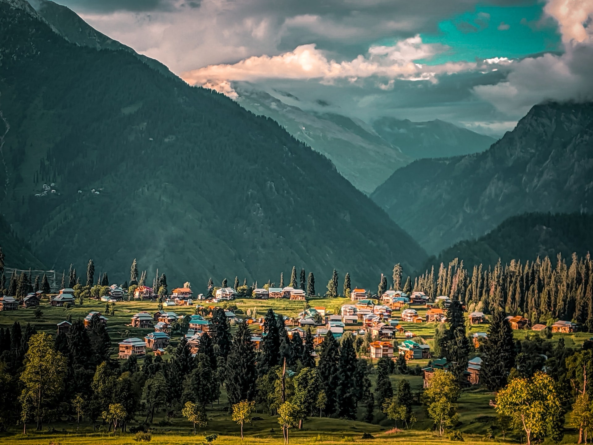

<div class="portfolio-single-load clearfix">
    <div class="custom-full-width-box">
        <div class="custom-container">
            <div class="custom-row align-items-center">
                <div class="custom-image-column">
                    
                </div>
                <div class="custom-text-column">
                    <h2 class="custom-heading">Nathia Gali
                    </h2>
                    <p class="custom-paragraph">
                        Perched at an elevation of 2,410 meters, Nathia Gali is a charming hill station steeped in colonial-era charm and natural splendor. Originally established by the British, it retains its quaint architecture and verdant landscapes. Visitors can explore scenic hiking trails, meander through lush forests, and revel in the cool mountain breeze. With its panoramic vistas of the Himalayas and vibrant flora, Nathia Gali is a tranquil retreat for nature lovers and leisure seekers alike.
                    </p>
                </div>
            </div>
        </div>
    </div><!-- .custom-full-width-box end -->

</div><!-- end single-project -->
